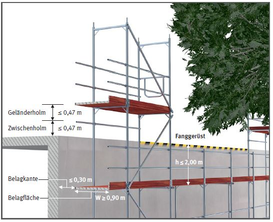
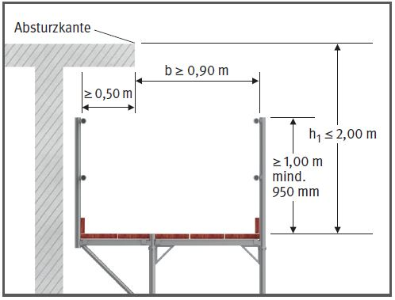
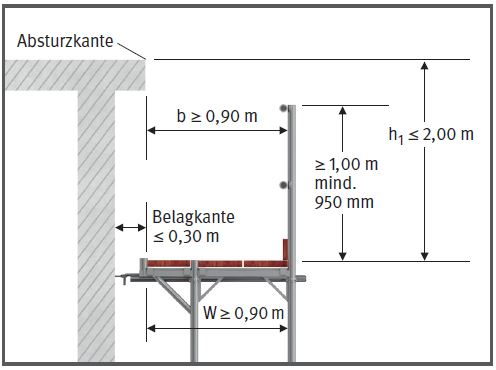
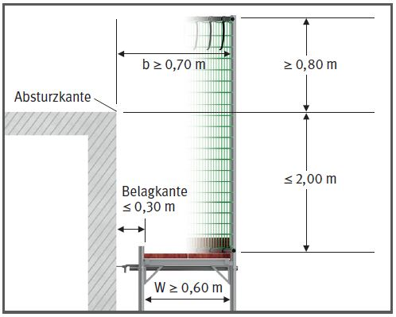

Gefährdungen
- Falsch dimensionierte oder
unvollständig aufgebaute Fanggerüste sowie fehlende Sicherungsmaßnahmen
bei der Montage
können zu Absturzunfällen
führen.
Allgemeines
- Wenn bei Arbeiten auf einer Fläche mit nicht
mehr als 22,5° Neigung an der Absturzkante als Sicherungsmaßnahme kein Seitenschutz
angebracht werden kann, müssen statt dessen Fanggerüste verwendet werden, die ein Auffangen
abstützender Personen gewährleisten.
- Gemäß der Rangfolge der
Schutzmaßnahmen dürfen
Fanggerüste nur dann erstellt
werden, wenn aufgrund baulicher
Gegebenheiten oder der
Umgebung keine Ausbildung
von Absturzsicherungen
(Seitenschutz) möglich ist.



Schutzmaßnahmen
- Bei der Verwendung von Fanggerüsten ist u. a. folgendes zu
beachten:
- zur Reduzierung der Gefährdung
den Höhenunterschied
zwischen Absturzkante und
Gerüstbelag möglichst minimieren,
- der max. Höhenunterschied
zwischen Absturzkante und
Gerüstbelag darf bei Fanggerüsten mit einer Breite der
Fanglage von mind. 0,90 m
nicht mehr als 2,00 m betragen.
- abweichend darf bei Fang -
gerüsten mit einer geschlossenen Schutzwand die Breite
der Fanglage mind. 0,60 m
betragen. Hierbei muss die
Oberkante der geschlossenen
Schutzwand die Absturzkante
mind. 0,80 m überragen und
der horizontale Abstand
zwischen Absturzkante und
Schutzwand mind. 0,70 m
betragen.
- Gerüstbauteile nicht ausbauen.
- Kein Material auf dem Fangbelag lagern.
Prüfungen
- Gerüstersteller: Prüfung durch eine "zur Prüfung befähigte Person" nach Fertigstellung und vor Übergabe an den Nutzer, um den ordnungsgemäßen Zustand festzustellen (Nachweis-Prüfprotokoll).
- Gerüstnutzer: Inaugenscheinnahme durch eine "qualifizierte Person" des jeweiligen Nutzers vor der Verwendung, um die sichere Funktion und die Mängelfreiheit festzustellen (Nachweis-Checkliste).
07/2021